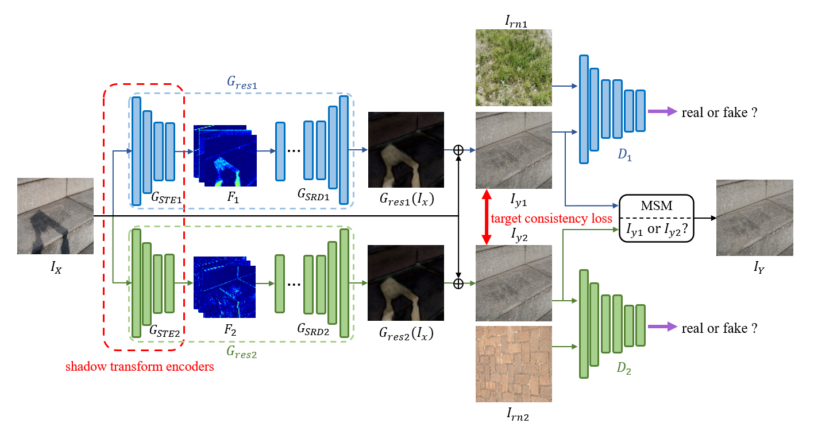
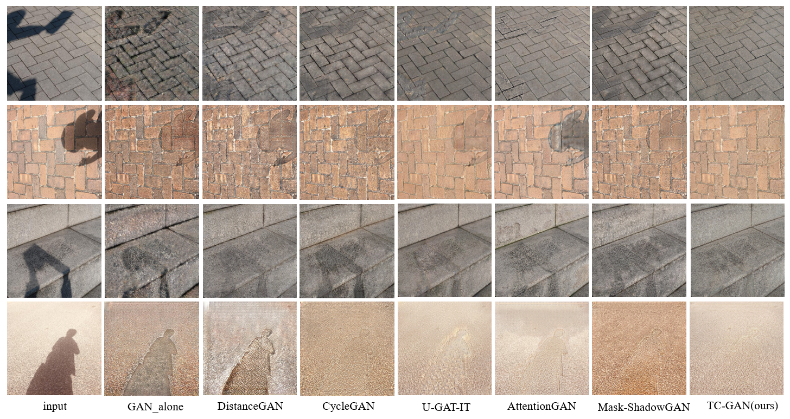

Unsupervised Shadow Removal using Target Consistency Generative Adversarial Network
Chongqing University of Technology

Abstract
Unsupervised shadow removal aims to learn a mapping function that translates original image from shadow domain to shadow-free domain in the absence of paired shadow and shadow-free data. In this paper, we develop a simple yet efficient target consistence generative adversarial network (TC-GAN) for unsupervised shadow removal. Compared with the bidirectional mapping in cycle-consistency based methods for shadow removal, TC-GAN only learns the one-sided mapping from shadow domain to shadow-free domain. With the proposed target-consistency constraint, the correlations between shadow image and the output shadow-free image is strictly confined and the many-to-one inverse mapping problem can be solved. Extensive quantitative and qualitative comparison experiments results show that TC-GAN outperforms the state-of-the-art methods by 14.9% improvement in terms of FID and 31.5% increasement in terms of KID, and even achieves comparable performance with supervised shadow removal methods.
Examples

Downloads
Citation
@inproceedings{9859634,
author={Tan, Chao and Feng, Xin and Chen, Bin and Long, Jianwu},
booktitle={2022 IEEE International Conference on Multimedia and Expo (ICME)},
title={TC-ShadowGAN: A Target-Consistency Generative Adversarial Network for Unpaired Shadow Removal},
year={2022},
volume={},
number={},
pages={01-06},
keywords={Deep learning;Correlation;Codes;Streaming media;Generative adversarial networks;Task analysis;Unpaired Shadow Removal;Generative Adversarial Networks},
doi={10.1109/ICME52920.2022.9859634}}